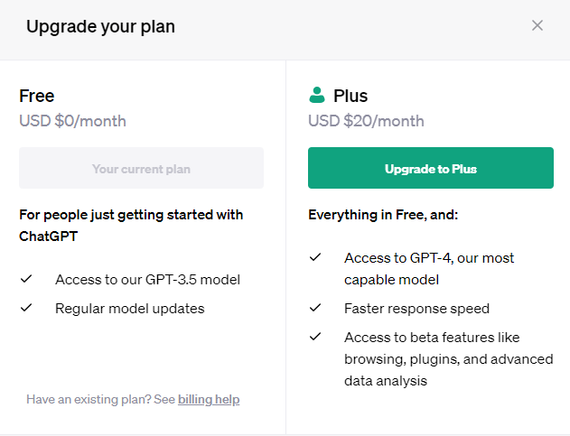

ChatGPT基本版使用GPT-3.5模型，這是一種非常先進的人工智能技術，能夠進行基本對話和回答問題。這個版本非常適合個人和小型團隊使用，並且有著定期的更新，這意味著你可以獲得最新的功能和最佳的體驗。
如果你決定加入每個月20美元的進階方案，你將能夠享受到增強版的ChatGPT，也就是ChatGPT Plus。這個版本使用了升級版的GPT-4模型，這是目前最強大的模型之一。ChatGPT Plus不僅具有更快的回應速度，還能夠獨家享有一些特殊功能的使用權限。
使用ChatGPT Plus，你將體驗到更高效的回應速度。這對於快節奏的工作環境和繁忙的團隊來說非常重要，因為你將能夠更快地獲得AI生成的答案和解決方案。此外，ChatGPT Plus還提供了一些獨家的beta版功能，如瀏覽、插件和進階數據分析等。這些功能將為你的工作帶來更多便利和效率。
升級到ChatGPT Plus還意味著你將擁有更高的準確性和更多的功能。GPT-4模型的升級帶來了更強大的語言理解和生成能力，這使得ChatGPT Plus能夠更好地理解和回答你的問題。無論你是在處理複雜的專業問題還是處理大量的客戶查詢，ChatGPT Plus都能夠提供更準確和有用的答案。
最後，ChatGPT Plus是為大型團隊和企業設計的。它提供了更多的功能和工具，以應對企業級的需求。無論是在團隊協作、知識共享還是業務運營中，ChatGPT Plus都能夠為你的團隊提供強大的支持和解決方案。

ChatGPT基本版與Plus版的差別
※本網頁並沒有接受ChatGPT官方的贊助※